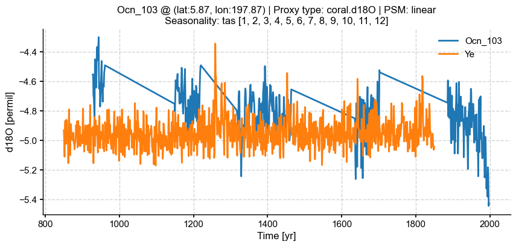
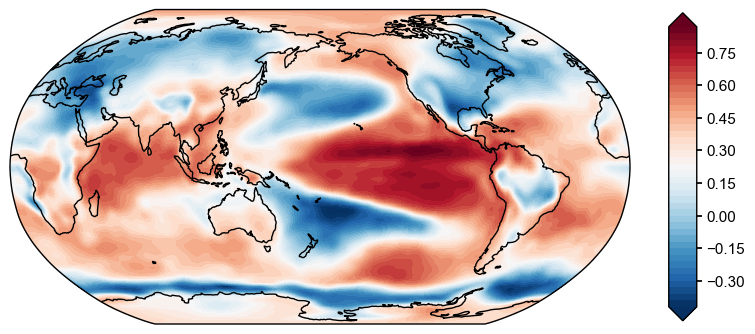

<!DOCTYPE html>
<html class="writer-html5" lang="en" >
<head>
  <meta charset="utf-8" />
  
  <meta name="viewport" content="width=device-width, initial-scale=1.0" />
  
  <title>Visualization functionalities &mdash; LMR Turbo  documentation</title>
  

  
  <link rel="stylesheet" href="../_static/css/theme.css" type="text/css" />
  <link rel="stylesheet" href="../_static/pygments.css" type="text/css" />

  
  

  
  

  

  
  <!--[if lt IE 9]>
    <script src="../_static/js/html5shiv.min.js"></script>
  <![endif]-->
  
    
      <script type="text/javascript" id="documentation_options" data-url_root="../" src="../_static/documentation_options.js"></script>
        <script src="../_static/jquery.js"></script>
        <script src="../_static/underscore.js"></script>
        <script src="../_static/doctools.js"></script>
    
    <script type="text/javascript" src="../_static/js/theme.js"></script>

    
    <link rel="index" title="Index" href="../genindex.html" />
    <link rel="search" title="Search" href="../search.html" />
    <link rel="next" title="User Interface" href="../ui.html" />
    <link rel="prev" title="Top-level workflow in LMRt" href="quickstart_top-level-workflow.html" /> 
</head>

<body class="wy-body-for-nav">

   
  <div class="wy-grid-for-nav">
    
    <nav data-toggle="wy-nav-shift" class="wy-nav-side">
      <div class="wy-side-scroll">
        <div class="wy-side-nav-search" >
          

          
            <a href="../index.html" class="icon icon-home"> LMR Turbo
          

          
          </a>

          
            
            
          

          
<div role="search">
  <form id="rtd-search-form" class="wy-form" action="../search.html" method="get">
    <input type="text" name="q" placeholder="Search docs" />
    <input type="hidden" name="check_keywords" value="yes" />
    <input type="hidden" name="area" value="default" />
  </form>
</div>

          
        </div>

        
        <div class="wy-menu wy-menu-vertical" data-spy="affix" role="navigation" aria-label="main navigation">
          
            
            
              
            
            
              <p class="caption"><span class="caption-text">Contents</span></p>
<ul class="current">
<li class="toctree-l1"><a class="reference internal" href="../installation.html">Installallation</a></li>
<li class="toctree-l1 current"><a class="reference internal" href="../tutorial.html">Tutorial</a><ul class="current">
<li class="toctree-l2 current"><a class="reference internal" href="../tutorial.html#quickstart">Quickstart</a><ul class="current">
<li class="toctree-l3"><a class="reference internal" href="quickstart_low-level-workflow.html">Your 1st LMR reconstruction</a></li>
<li class="toctree-l3"><a class="reference internal" href="quickstart_high-level-workflow.html">High-level workflow in LMRt</a></li>
<li class="toctree-l3"><a class="reference internal" href="quickstart_top-level-workflow.html">Top-level workflow in LMRt</a></li>
<li class="toctree-l3 current"><a class="current reference internal" href="#">Visualization functionalities</a><ul>
<li class="toctree-l4"><a class="reference internal" href="#plot-the-whole-loaded-proxy-database">Plot the whole loaded proxy database</a></li>
<li class="toctree-l4"><a class="reference internal" href="#plot-a-specific-proxy-record">Plot a specific proxy record</a></li>
<li class="toctree-l4"><a class="reference internal" href="#plot-a-prior-obs-field">Plot a prior/obs field</a></li>
<li class="toctree-l4"><a class="reference internal" href="#plot-the-reconstructed-series-and-fields">Plot the reconstructed series and fields</a></li>
<li class="toctree-l4"><a class="reference internal" href="#plot-validation-of-the-reconstructed-field-against-a-target-field">Plot validation of the reconstructed field against a target field</a></li>
<li class="toctree-l4"><a class="reference internal" href="#plot-validation-of-the-reconstructed-series-against-a-target-field-series">Plot validation of the reconstructed series against a target field/series</a></li>
<li class="toctree-l4"><a class="reference internal" href="#plot-validation-of-the-reconstructed-field-against-the-whole-proxy-database-or-a-single-proxy-record">Plot validation of the reconstructed field against the whole proxy database or a single proxy record</a></li>
</ul>
</li>
</ul>
</li>
</ul>
</li>
<li class="toctree-l1"><a class="reference internal" href="../ui.html">User Interface</a></li>
</ul>

            
          
        </div>
        
      </div>
    </nav>

    <section data-toggle="wy-nav-shift" class="wy-nav-content-wrap">

      
      <nav class="wy-nav-top" aria-label="top navigation">
        
          <i data-toggle="wy-nav-top" class="fa fa-bars"></i>
          <a href="../index.html">LMR Turbo</a>
        
      </nav>


      <div class="wy-nav-content">
        
        <div class="rst-content">
        
          


<div role="navigation" aria-label="breadcrumbs navigation">

  <ul class="wy-breadcrumbs">
    
      <li><a href="../index.html" class="icon icon-home"></a> &raquo;</li>
        
          <li><a href="../tutorial.html">Tutorial</a> &raquo;</li>
        
      <li>Visualization functionalities</li>
    
    
      <li class="wy-breadcrumbs-aside">
        
          
            <a href="../_sources/tutorial/quickstart_visualization.rst.txt" rel="nofollow"> View page source</a>
          
        
      </li>
    
  </ul>

  
  <hr/>
</div>
          <div role="main" class="document" itemscope="itemscope" itemtype="http://schema.org/Article">
           <div itemprop="articleBody">
            
  <div class="section" id="visualization-functionalities">
<h1>Visualization functionalities<a class="headerlink" href="#visualization-functionalities" title="Permalink to this headline">¶</a></h1>
<p>In this tutorial, we demonstrate the visualization functionalities based
on our 1st reconstruction. Note that these functionalities are still in
a working-in-process, preliminary stage.</p>
<div class="highlight-ipython3 notranslate"><div class="highlight"><pre><span></span><span class="o">%</span><span class="k">load_ext</span> autoreload
<span class="o">%</span><span class="k">autoreload</span> 2

<span class="kn">import</span> <span class="nn">LMRt</span>
<span class="kn">import</span> <span class="nn">os</span>
<span class="kn">import</span> <span class="nn">numpy</span> <span class="k">as</span> <span class="nn">np</span>
<span class="kn">import</span> <span class="nn">pandas</span> <span class="k">as</span> <span class="nn">pd</span>
<span class="kn">import</span> <span class="nn">xarray</span> <span class="k">as</span> <span class="nn">xr</span>
</pre></div>
</div>
<div class="section" id="plot-the-whole-loaded-proxy-database">
<h2>Plot the whole loaded proxy database<a class="headerlink" href="#plot-the-whole-loaded-proxy-database" title="Permalink to this headline">¶</a></h2>
<div class="highlight-ipython3 notranslate"><div class="highlight"><pre><span></span><span class="n">job_dirpath</span> <span class="o">=</span> <span class="s1">&#39;./testcases/PAGES2k_CCSM4_GISTEMP/recon/&#39;</span>
<span class="n">job</span> <span class="o">=</span> <span class="n">pd</span><span class="o">.</span><span class="n">read_pickle</span><span class="p">(</span><span class="n">os</span><span class="o">.</span><span class="n">path</span><span class="o">.</span><span class="n">join</span><span class="p">(</span><span class="n">job_dirpath</span><span class="p">,</span> <span class="s1">&#39;job.pkl&#39;</span><span class="p">))</span>
<span class="n">fig</span><span class="p">,</span> <span class="n">ax</span> <span class="o">=</span> <span class="n">job</span><span class="o">.</span><span class="n">proxydb</span><span class="o">.</span><span class="n">plot</span><span class="p">()</span>
</pre></div>
</div>
<div class="highlight-default notranslate"><div class="highlight"><pre><span></span><span class="o">/</span><span class="n">Users</span><span class="o">/</span><span class="n">fzhu</span><span class="o">/</span><span class="n">Apps</span><span class="o">/</span><span class="n">miniconda3</span><span class="o">/</span><span class="n">envs</span><span class="o">/</span><span class="n">presto</span><span class="o">/</span><span class="n">lib</span><span class="o">/</span><span class="n">python3</span><span class="o">.</span><span class="mi">8</span><span class="o">/</span><span class="n">site</span><span class="o">-</span><span class="n">packages</span><span class="o">/</span><span class="n">cartopy</span><span class="o">/</span><span class="n">mpl</span><span class="o">/</span><span class="n">geoaxes</span><span class="o">.</span><span class="n">py</span><span class="p">:</span><span class="mi">387</span><span class="p">:</span> <span class="n">MatplotlibDeprecationWarning</span><span class="p">:</span>
<span class="n">The</span> <span class="s1">&#39;inframe&#39;</span> <span class="n">parameter</span> <span class="n">of</span> <span class="n">draw</span><span class="p">()</span> <span class="n">was</span> <span class="n">deprecated</span> <span class="ow">in</span> <span class="n">Matplotlib</span> <span class="mf">3.3</span> <span class="ow">and</span> <span class="n">will</span> <span class="n">be</span> <span class="n">removed</span> <span class="n">two</span> <span class="n">minor</span> <span class="n">releases</span> <span class="n">later</span><span class="o">.</span> <span class="n">Use</span> <span class="n">Axes</span><span class="o">.</span><span class="n">redraw_in_frame</span><span class="p">()</span> <span class="n">instead</span><span class="o">.</span> <span class="n">If</span> <span class="nb">any</span> <span class="n">parameter</span> <span class="n">follows</span> <span class="s1">&#39;inframe&#39;</span><span class="p">,</span> <span class="n">they</span> <span class="n">should</span> <span class="n">be</span> <span class="n">passed</span> <span class="k">as</span> <span class="n">keyword</span><span class="p">,</span> <span class="ow">not</span> <span class="n">positionally</span><span class="o">.</span>
  <span class="k">return</span> <span class="n">matplotlib</span><span class="o">.</span><span class="n">axes</span><span class="o">.</span><span class="n">Axes</span><span class="o">.</span><span class="n">draw</span><span class="p">(</span><span class="bp">self</span><span class="p">,</span> <span class="n">renderer</span><span class="o">=</span><span class="n">renderer</span><span class="p">,</span>
</pre></div>
</div>

</div>
<div class="section" id="plot-a-specific-proxy-record">
<h2>Plot a specific proxy record<a class="headerlink" href="#plot-a-specific-proxy-record" title="Permalink to this headline">¶</a></h2>
<div class="highlight-ipython3 notranslate"><div class="highlight"><pre><span></span><span class="n">fig</span><span class="p">,</span> <span class="n">ax</span> <span class="o">=</span> <span class="n">job</span><span class="o">.</span><span class="n">proxydb</span><span class="o">.</span><span class="n">records</span><span class="p">[</span><span class="s1">&#39;Ocn_103&#39;</span><span class="p">]</span><span class="o">.</span><span class="n">plot</span><span class="p">()</span>
</pre></div>
</div>

</div>
<div class="section" id="plot-a-prior-obs-field">
<h2>Plot a prior/obs field<a class="headerlink" href="#plot-a-prior-obs-field" title="Permalink to this headline">¶</a></h2>
<div class="highlight-ipython3 notranslate"><div class="highlight"><pre><span></span><span class="n">fig</span><span class="p">,</span> <span class="n">ax</span> <span class="o">=</span> <span class="n">job</span><span class="o">.</span><span class="n">prior</span><span class="o">.</span><span class="n">fields</span><span class="p">[</span><span class="s1">&#39;tas&#39;</span><span class="p">]</span><span class="o">.</span><span class="n">plot</span><span class="p">(</span><span class="n">idx_t</span><span class="o">=-</span><span class="mi">1</span><span class="p">)</span>
</pre></div>
</div>
<div class="highlight-default notranslate"><div class="highlight"><pre><span></span><span class="o">/</span><span class="n">Users</span><span class="o">/</span><span class="n">fzhu</span><span class="o">/</span><span class="n">Github</span><span class="o">/</span><span class="n">LMRt</span><span class="o">/</span><span class="n">LMRt</span><span class="o">/</span><span class="n">visual</span><span class="o">.</span><span class="n">py</span><span class="p">:</span><span class="mi">218</span><span class="p">:</span> <span class="n">MatplotlibDeprecationWarning</span><span class="p">:</span> <span class="n">The</span> <span class="s1">&#39;extend&#39;</span> <span class="n">parameter</span> <span class="n">to</span> <span class="n">Colorbar</span> <span class="n">has</span> <span class="n">no</span> <span class="n">effect</span> <span class="n">because</span> <span class="n">it</span> <span class="ow">is</span> <span class="n">overridden</span> <span class="n">by</span> <span class="n">the</span> <span class="n">mappable</span><span class="p">;</span> <span class="n">it</span> <span class="ow">is</span> <span class="n">deprecated</span> <span class="n">since</span> <span class="mf">3.3</span> <span class="ow">and</span> <span class="n">will</span> <span class="n">be</span> <span class="n">removed</span> <span class="n">two</span> <span class="n">minor</span> <span class="n">releases</span> <span class="n">later</span><span class="o">.</span>
  <span class="n">cbar</span> <span class="o">=</span> <span class="n">fig</span><span class="o">.</span><span class="n">colorbar</span><span class="p">(</span><span class="n">im</span><span class="p">,</span> <span class="n">ax</span><span class="o">=</span><span class="n">ax</span><span class="p">,</span> <span class="n">orientation</span><span class="o">=</span><span class="n">cbar_orientation</span><span class="p">,</span> <span class="n">pad</span><span class="o">=</span><span class="n">cbar_pad</span><span class="p">,</span> <span class="n">aspect</span><span class="o">=</span><span class="n">cbar_aspect</span><span class="p">,</span> <span class="n">extend</span><span class="o">=</span><span class="n">extend</span><span class="p">,</span>
<span class="o">/</span><span class="n">Users</span><span class="o">/</span><span class="n">fzhu</span><span class="o">/</span><span class="n">Apps</span><span class="o">/</span><span class="n">miniconda3</span><span class="o">/</span><span class="n">envs</span><span class="o">/</span><span class="n">presto</span><span class="o">/</span><span class="n">lib</span><span class="o">/</span><span class="n">python3</span><span class="o">.</span><span class="mi">8</span><span class="o">/</span><span class="n">site</span><span class="o">-</span><span class="n">packages</span><span class="o">/</span><span class="n">cartopy</span><span class="o">/</span><span class="n">mpl</span><span class="o">/</span><span class="n">geoaxes</span><span class="o">.</span><span class="n">py</span><span class="p">:</span><span class="mi">387</span><span class="p">:</span> <span class="n">MatplotlibDeprecationWarning</span><span class="p">:</span>
<span class="n">The</span> <span class="s1">&#39;inframe&#39;</span> <span class="n">parameter</span> <span class="n">of</span> <span class="n">draw</span><span class="p">()</span> <span class="n">was</span> <span class="n">deprecated</span> <span class="ow">in</span> <span class="n">Matplotlib</span> <span class="mf">3.3</span> <span class="ow">and</span> <span class="n">will</span> <span class="n">be</span> <span class="n">removed</span> <span class="n">two</span> <span class="n">minor</span> <span class="n">releases</span> <span class="n">later</span><span class="o">.</span> <span class="n">Use</span> <span class="n">Axes</span><span class="o">.</span><span class="n">redraw_in_frame</span><span class="p">()</span> <span class="n">instead</span><span class="o">.</span> <span class="n">If</span> <span class="nb">any</span> <span class="n">parameter</span> <span class="n">follows</span> <span class="s1">&#39;inframe&#39;</span><span class="p">,</span> <span class="n">they</span> <span class="n">should</span> <span class="n">be</span> <span class="n">passed</span> <span class="k">as</span> <span class="n">keyword</span><span class="p">,</span> <span class="ow">not</span> <span class="n">positionally</span><span class="o">.</span>
  <span class="k">return</span> <span class="n">matplotlib</span><span class="o">.</span><span class="n">axes</span><span class="o">.</span><span class="n">Axes</span><span class="o">.</span><span class="n">draw</span><span class="p">(</span><span class="bp">self</span><span class="p">,</span> <span class="n">renderer</span><span class="o">=</span><span class="n">renderer</span><span class="p">,</span>
</pre></div>
</div>

<div class="highlight-ipython3 notranslate"><div class="highlight"><pre><span></span><span class="n">fig</span><span class="p">,</span> <span class="n">ax</span> <span class="o">=</span> <span class="n">job</span><span class="o">.</span><span class="n">obs</span><span class="o">.</span><span class="n">fields</span><span class="p">[</span><span class="s1">&#39;tas&#39;</span><span class="p">]</span><span class="o">.</span><span class="n">plot</span><span class="p">(</span><span class="n">idx_t</span><span class="o">=-</span><span class="mi">1</span><span class="p">)</span>
</pre></div>
</div>

</div>
<div class="section" id="plot-the-reconstructed-series-and-fields">
<h2>Plot the reconstructed series and fields<a class="headerlink" href="#plot-the-reconstructed-series-and-fields" title="Permalink to this headline">¶</a></h2>
<div class="highlight-ipython3 notranslate"><div class="highlight"><pre><span></span><span class="n">job_dirpath</span> <span class="o">=</span> <span class="s1">&#39;/Users/fzhu/Github/LMRt_rework/examples/pages2k_CCSM4/recon&#39;</span>
<span class="n">res</span> <span class="o">=</span> <span class="n">LMRt</span><span class="o">.</span><span class="n">ReconRes</span><span class="p">(</span><span class="n">job_dirpath</span><span class="p">,</span> <span class="n">verbose</span><span class="o">=</span><span class="kc">True</span><span class="p">)</span>
</pre></div>
</div>
<div class="highlight-default notranslate"><div class="highlight"><pre><span></span><span class="n">recon_paths</span><span class="p">:</span> <span class="p">[</span><span class="s1">&#39;/Users/fzhu/Github/LMRt_rework/examples/pages2k_CCSM4/recon/job_r00_recon.nc&#39;</span><span class="p">]</span>
<span class="n">idx_paths</span><span class="p">:</span> <span class="p">[</span><span class="s1">&#39;/Users/fzhu/Github/LMRt_rework/examples/pages2k_CCSM4/recon/job_r00_idx.pkl&#39;</span><span class="p">]</span>
<span class="n">job_path</span><span class="p">:</span> <span class="o">/</span><span class="n">Users</span><span class="o">/</span><span class="n">fzhu</span><span class="o">/</span><span class="n">Github</span><span class="o">/</span><span class="n">LMRt_rework</span><span class="o">/</span><span class="n">examples</span><span class="o">/</span><span class="n">pages2k_CCSM4</span><span class="o">/</span><span class="n">recon</span><span class="o">/</span><span class="n">job</span><span class="o">.</span><span class="n">pkl</span>
</pre></div>
</div>
<div class="highlight-ipython3 notranslate"><div class="highlight"><pre><span></span><span class="n">res</span><span class="o">.</span><span class="n">get_vars</span><span class="p">([</span><span class="s1">&#39;tas&#39;</span><span class="p">,</span> <span class="s1">&#39;nino3.4&#39;</span><span class="p">],</span> <span class="n">verbose</span><span class="o">=</span><span class="kc">True</span><span class="p">)</span>
</pre></div>
</div>
<div class="highlight-default notranslate"><div class="highlight"><pre><span></span>LMRt: res.get_var() &gt;&gt;&gt; loading variable: tas
LMRt: res.get_var() &gt;&gt;&gt; loading variable: nino3.4
LMRt: res.get_var() &gt;&gt;&gt; res.vars filled w/ varnames: [&#39;tas&#39;, &#39;nino3.4&#39;] and &quot;year | lat | lon&quot;
</pre></div>
</div>
<div class="highlight-ipython3 notranslate"><div class="highlight"><pre><span></span><span class="n">fig</span><span class="p">,</span> <span class="n">ax</span> <span class="o">=</span> <span class="n">res</span><span class="o">.</span><span class="n">vars</span><span class="p">[</span><span class="s1">&#39;nino3.4&#39;</span><span class="p">]</span><span class="o">.</span><span class="n">plot_envelope</span><span class="p">(</span><span class="n">xlim</span><span class="o">=</span><span class="p">[</span><span class="mi">850</span><span class="p">,</span> <span class="mi">2000</span><span class="p">])</span>
</pre></div>
</div>

<div class="highlight-ipython3 notranslate"><div class="highlight"><pre><span></span><span class="n">fig</span><span class="p">,</span> <span class="n">ax</span> <span class="o">=</span> <span class="n">res</span><span class="o">.</span><span class="n">vars</span><span class="p">[</span><span class="s1">&#39;tas&#39;</span><span class="p">]</span><span class="o">.</span><span class="n">field_list</span><span class="p">[</span><span class="mi">0</span><span class="p">]</span><span class="o">.</span><span class="n">plot</span><span class="p">()</span>
</pre></div>
</div>
<div class="highlight-default notranslate"><div class="highlight"><pre><span></span><span class="o">/</span><span class="n">Users</span><span class="o">/</span><span class="n">fzhu</span><span class="o">/</span><span class="n">Github</span><span class="o">/</span><span class="n">LMRt</span><span class="o">/</span><span class="n">LMRt</span><span class="o">/</span><span class="n">visual</span><span class="o">.</span><span class="n">py</span><span class="p">:</span><span class="mi">218</span><span class="p">:</span> <span class="n">MatplotlibDeprecationWarning</span><span class="p">:</span> <span class="n">The</span> <span class="s1">&#39;extend&#39;</span> <span class="n">parameter</span> <span class="n">to</span> <span class="n">Colorbar</span> <span class="n">has</span> <span class="n">no</span> <span class="n">effect</span> <span class="n">because</span> <span class="n">it</span> <span class="ow">is</span> <span class="n">overridden</span> <span class="n">by</span> <span class="n">the</span> <span class="n">mappable</span><span class="p">;</span> <span class="n">it</span> <span class="ow">is</span> <span class="n">deprecated</span> <span class="n">since</span> <span class="mf">3.3</span> <span class="ow">and</span> <span class="n">will</span> <span class="n">be</span> <span class="n">removed</span> <span class="n">two</span> <span class="n">minor</span> <span class="n">releases</span> <span class="n">later</span><span class="o">.</span>
  <span class="n">cbar</span> <span class="o">=</span> <span class="n">fig</span><span class="o">.</span><span class="n">colorbar</span><span class="p">(</span><span class="n">im</span><span class="p">,</span> <span class="n">ax</span><span class="o">=</span><span class="n">ax</span><span class="p">,</span> <span class="n">orientation</span><span class="o">=</span><span class="n">cbar_orientation</span><span class="p">,</span> <span class="n">pad</span><span class="o">=</span><span class="n">cbar_pad</span><span class="p">,</span> <span class="n">aspect</span><span class="o">=</span><span class="n">cbar_aspect</span><span class="p">,</span> <span class="n">extend</span><span class="o">=</span><span class="n">extend</span><span class="p">,</span>
<span class="o">/</span><span class="n">Users</span><span class="o">/</span><span class="n">fzhu</span><span class="o">/</span><span class="n">Apps</span><span class="o">/</span><span class="n">miniconda3</span><span class="o">/</span><span class="n">envs</span><span class="o">/</span><span class="n">presto</span><span class="o">/</span><span class="n">lib</span><span class="o">/</span><span class="n">python3</span><span class="o">.</span><span class="mi">8</span><span class="o">/</span><span class="n">site</span><span class="o">-</span><span class="n">packages</span><span class="o">/</span><span class="n">cartopy</span><span class="o">/</span><span class="n">mpl</span><span class="o">/</span><span class="n">geoaxes</span><span class="o">.</span><span class="n">py</span><span class="p">:</span><span class="mi">387</span><span class="p">:</span> <span class="n">MatplotlibDeprecationWarning</span><span class="p">:</span>
<span class="n">The</span> <span class="s1">&#39;inframe&#39;</span> <span class="n">parameter</span> <span class="n">of</span> <span class="n">draw</span><span class="p">()</span> <span class="n">was</span> <span class="n">deprecated</span> <span class="ow">in</span> <span class="n">Matplotlib</span> <span class="mf">3.3</span> <span class="ow">and</span> <span class="n">will</span> <span class="n">be</span> <span class="n">removed</span> <span class="n">two</span> <span class="n">minor</span> <span class="n">releases</span> <span class="n">later</span><span class="o">.</span> <span class="n">Use</span> <span class="n">Axes</span><span class="o">.</span><span class="n">redraw_in_frame</span><span class="p">()</span> <span class="n">instead</span><span class="o">.</span> <span class="n">If</span> <span class="nb">any</span> <span class="n">parameter</span> <span class="n">follows</span> <span class="s1">&#39;inframe&#39;</span><span class="p">,</span> <span class="n">they</span> <span class="n">should</span> <span class="n">be</span> <span class="n">passed</span> <span class="k">as</span> <span class="n">keyword</span><span class="p">,</span> <span class="ow">not</span> <span class="n">positionally</span><span class="o">.</span>
  <span class="k">return</span> <span class="n">matplotlib</span><span class="o">.</span><span class="n">axes</span><span class="o">.</span><span class="n">Axes</span><span class="o">.</span><span class="n">draw</span><span class="p">(</span><span class="bp">self</span><span class="p">,</span> <span class="n">renderer</span><span class="o">=</span><span class="n">renderer</span><span class="p">,</span>
</pre></div>
</div>

</div>
<div class="section" id="plot-validation-of-the-reconstructed-field-against-a-target-field">
<h2>Plot validation of the reconstructed field against a target field<a class="headerlink" href="#plot-validation-of-the-reconstructed-field-against-a-target-field" title="Permalink to this headline">¶</a></h2>
<div class="highlight-ipython3 notranslate"><div class="highlight"><pre><span></span><span class="n">ds</span> <span class="o">=</span> <span class="n">LMRt</span><span class="o">.</span><span class="n">Dataset</span><span class="p">()</span><span class="o">.</span><span class="n">load_nc</span><span class="p">(</span>
    <span class="p">{</span><span class="s1">&#39;tas&#39;</span><span class="p">:</span><span class="s1">&#39;./testcases/PAGES2k_CCSM4_GISTEMP/data/obs/tas_sfc_Amon_20CR_185101-201112.nc&#39;</span><span class="p">},</span>
    <span class="n">anom_period</span><span class="o">=</span><span class="p">[</span><span class="mi">1951</span><span class="p">,</span> <span class="mi">1980</span><span class="p">],</span>
    <span class="n">varname_dict</span><span class="o">=</span><span class="p">{</span><span class="s1">&#39;tas&#39;</span><span class="p">:</span> <span class="s1">&#39;tas&#39;</span><span class="p">}</span>
<span class="p">)</span>
<span class="n">target_fd</span> <span class="o">=</span> <span class="n">ds</span><span class="o">.</span><span class="n">fields</span><span class="p">[</span><span class="s1">&#39;tas&#39;</span><span class="p">]</span>
<span class="n">target_fd</span> <span class="o">=</span> <span class="n">target_fd</span><span class="o">.</span><span class="n">seasonalize</span><span class="p">(</span><span class="nb">list</span><span class="p">(</span><span class="nb">range</span><span class="p">(</span><span class="mi">1</span><span class="p">,</span> <span class="mi">13</span><span class="p">)))</span>
</pre></div>
</div>
<div class="highlight-ipython3 notranslate"><div class="highlight"><pre><span></span><span class="n">corr_fd</span> <span class="o">=</span> <span class="n">res</span><span class="o">.</span><span class="n">vars</span><span class="p">[</span><span class="s1">&#39;tas&#39;</span><span class="p">]</span><span class="o">.</span><span class="n">validate</span><span class="p">(</span><span class="n">target_fd</span><span class="p">,</span> <span class="n">stat</span><span class="o">=</span><span class="s1">&#39;corr&#39;</span><span class="p">)</span>
<span class="n">fig</span><span class="p">,</span> <span class="n">ax</span> <span class="o">=</span> <span class="n">corr_fd</span><span class="o">.</span><span class="n">plot</span><span class="p">()</span>
</pre></div>
</div>
<div class="highlight-default notranslate"><div class="highlight"><pre><span></span>Calculating metric: corr: 100%|██████████| 42/42 [00:16&lt;00:00,  2.58it/s]
/Users/fzhu/Apps/miniconda3/envs/presto/lib/python3.8/site-packages/numpy/core/fromnumeric.py:3372: RuntimeWarning: Mean of empty slice.
  return _methods._mean(a, axis=axis, dtype=dtype,
/Users/fzhu/Apps/miniconda3/envs/presto/lib/python3.8/site-packages/numpy/core/_methods.py:170: RuntimeWarning: invalid value encountered in double_scalars
  ret = ret.dtype.type(ret / rcount)
/Users/fzhu/Github/LMRt/LMRt/visual.py:218: MatplotlibDeprecationWarning: The &#39;extend&#39; parameter to Colorbar has no effect because it is overridden by the mappable; it is deprecated since 3.3 and will be removed two minor releases later.
  cbar = fig.colorbar(im, ax=ax, orientation=cbar_orientation, pad=cbar_pad, aspect=cbar_aspect, extend=extend,
/Users/fzhu/Apps/miniconda3/envs/presto/lib/python3.8/site-packages/cartopy/mpl/geoaxes.py:387: MatplotlibDeprecationWarning:
The &#39;inframe&#39; parameter of draw() was deprecated in Matplotlib 3.3 and will be removed two minor releases later. Use Axes.redraw_in_frame() instead. If any parameter follows &#39;inframe&#39;, they should be passed as keyword, not positionally.
  return matplotlib.axes.Axes.draw(self, renderer=renderer,
</pre></div>
</div>

<div class="highlight-ipython3 notranslate"><div class="highlight"><pre><span></span><span class="n">R2_fd</span> <span class="o">=</span> <span class="n">res</span><span class="o">.</span><span class="n">vars</span><span class="p">[</span><span class="s1">&#39;tas&#39;</span><span class="p">]</span><span class="o">.</span><span class="n">validate</span><span class="p">(</span><span class="n">target_fd</span><span class="p">,</span> <span class="n">stat</span><span class="o">=</span><span class="s1">&#39;R2&#39;</span><span class="p">)</span>
<span class="n">fig</span><span class="p">,</span> <span class="n">ax</span> <span class="o">=</span> <span class="n">R2_fd</span><span class="o">.</span><span class="n">plot</span><span class="p">()</span>
</pre></div>
</div>
<div class="highlight-default notranslate"><div class="highlight"><pre><span></span>Calculating metric: R2: 100%|██████████| 42/42 [00:16&lt;00:00,  2.55it/s]
/Users/fzhu/Apps/miniconda3/envs/presto/lib/python3.8/site-packages/numpy/core/fromnumeric.py:3372: RuntimeWarning: Mean of empty slice.
  return _methods._mean(a, axis=axis, dtype=dtype,
/Users/fzhu/Apps/miniconda3/envs/presto/lib/python3.8/site-packages/numpy/core/_methods.py:170: RuntimeWarning: invalid value encountered in double_scalars
  ret = ret.dtype.type(ret / rcount)
/Users/fzhu/Github/LMRt/LMRt/visual.py:218: MatplotlibDeprecationWarning: The &#39;extend&#39; parameter to Colorbar has no effect because it is overridden by the mappable; it is deprecated since 3.3 and will be removed two minor releases later.
  cbar = fig.colorbar(im, ax=ax, orientation=cbar_orientation, pad=cbar_pad, aspect=cbar_aspect, extend=extend,
/Users/fzhu/Apps/miniconda3/envs/presto/lib/python3.8/site-packages/cartopy/mpl/geoaxes.py:387: MatplotlibDeprecationWarning:
The &#39;inframe&#39; parameter of draw() was deprecated in Matplotlib 3.3 and will be removed two minor releases later. Use Axes.redraw_in_frame() instead. If any parameter follows &#39;inframe&#39;, they should be passed as keyword, not positionally.
  return matplotlib.axes.Axes.draw(self, renderer=renderer,
</pre></div>
</div>

<div class="highlight-ipython3 notranslate"><div class="highlight"><pre><span></span><span class="n">ce_fd</span> <span class="o">=</span> <span class="n">res</span><span class="o">.</span><span class="n">vars</span><span class="p">[</span><span class="s1">&#39;tas&#39;</span><span class="p">]</span><span class="o">.</span><span class="n">validate</span><span class="p">(</span><span class="n">target_fd</span><span class="p">,</span> <span class="n">stat</span><span class="o">=</span><span class="s1">&#39;CE&#39;</span><span class="p">)</span>
<span class="n">fig</span><span class="p">,</span> <span class="n">ax</span> <span class="o">=</span> <span class="n">ce_fd</span><span class="o">.</span><span class="n">plot</span><span class="p">()</span>
</pre></div>
</div>
<div class="highlight-default notranslate"><div class="highlight"><pre><span></span>Calculating metric: CE: 100%|██████████| 42/42 [00:01&lt;00:00, 23.60it/s]
</pre></div>
</div>

</div>
<div class="section" id="plot-validation-of-the-reconstructed-series-against-a-target-field-series">
<h2>Plot validation of the reconstructed series against a target field/series<a class="headerlink" href="#plot-validation-of-the-reconstructed-series-against-a-target-field-series" title="Permalink to this headline">¶</a></h2>
<div class="highlight-ipython3 notranslate"><div class="highlight"><pre><span></span><span class="n">corr_nino34_fd</span> <span class="o">=</span> <span class="n">res</span><span class="o">.</span><span class="n">vars</span><span class="p">[</span><span class="s1">&#39;nino3.4&#39;</span><span class="p">]</span><span class="o">.</span><span class="n">validate</span><span class="p">(</span><span class="n">target_fd</span><span class="p">,</span> <span class="n">stat</span><span class="o">=</span><span class="s1">&#39;corr&#39;</span><span class="p">)</span>
<span class="n">fig</span><span class="p">,</span> <span class="n">ax</span> <span class="o">=</span> <span class="n">corr_nino34_fd</span><span class="o">.</span><span class="n">plot</span><span class="p">()</span>
</pre></div>
</div>
<div class="highlight-default notranslate"><div class="highlight"><pre><span></span>Calculating metric: corr: 100%|██████████| 91/91 [01:41&lt;00:00,  1.11s/it]
/Users/fzhu/Apps/miniconda3/envs/presto/lib/python3.8/site-packages/numpy/core/fromnumeric.py:3372: RuntimeWarning: Mean of empty slice.
  return _methods._mean(a, axis=axis, dtype=dtype,
/Users/fzhu/Apps/miniconda3/envs/presto/lib/python3.8/site-packages/numpy/core/_methods.py:170: RuntimeWarning: invalid value encountered in double_scalars
  ret = ret.dtype.type(ret / rcount)
/Users/fzhu/Github/LMRt_rework/LMRt/visual.py:218: MatplotlibDeprecationWarning: The &#39;extend&#39; parameter to Colorbar has no effect because it is overridden by the mappable; it is deprecated since 3.3 and will be removed two minor releases later.
  cbar = fig.colorbar(im, ax=ax, orientation=cbar_orientation, pad=cbar_pad, aspect=cbar_aspect, extend=extend,
/Users/fzhu/Apps/miniconda3/envs/presto/lib/python3.8/site-packages/cartopy/mpl/geoaxes.py:387: MatplotlibDeprecationWarning:
The &#39;inframe&#39; parameter of draw() was deprecated in Matplotlib 3.3 and will be removed two minor releases later. Use Axes.redraw_in_frame() instead. If any parameter follows &#39;inframe&#39;, they should be passed as keyword, not positionally.
  return matplotlib.axes.Axes.draw(self, renderer=renderer,
</pre></div>
</div>

<div class="highlight-ipython3 notranslate"><div class="highlight"><pre><span></span><span class="kn">from</span> <span class="nn">scipy.io</span> <span class="kn">import</span> <span class="n">loadmat</span>

<span class="n">data</span> <span class="o">=</span> <span class="n">loadmat</span><span class="p">(</span><span class="s1">&#39;../examples/pages2k_CCSM4/data/obs/NINO34_BC09.mat&#39;</span><span class="p">)</span>
<span class="n">syr</span><span class="p">,</span> <span class="n">eyr</span> <span class="o">=</span> <span class="mi">1873</span><span class="p">,</span> <span class="mi">2000</span>
<span class="n">nyr</span> <span class="o">=</span> <span class="n">eyr</span><span class="o">-</span><span class="n">syr</span><span class="o">+</span><span class="mi">1</span>
<span class="n">nino34</span> <span class="o">=</span> <span class="n">np</span><span class="o">.</span><span class="n">zeros</span><span class="p">(</span><span class="n">nyr</span><span class="p">)</span>
<span class="k">for</span> <span class="n">i</span> <span class="ow">in</span> <span class="nb">range</span><span class="p">(</span><span class="n">nyr</span><span class="p">):</span>
    <span class="n">nino34</span><span class="p">[</span><span class="n">i</span><span class="p">]</span> <span class="o">=</span> <span class="n">np</span><span class="o">.</span><span class="n">mean</span><span class="p">(</span><span class="n">data</span><span class="p">[</span><span class="s1">&#39;nino34&#39;</span><span class="p">][</span><span class="n">i</span><span class="o">*</span><span class="mi">12</span><span class="p">:</span><span class="mi">12</span><span class="o">+</span><span class="n">i</span><span class="o">*</span><span class="mi">12</span><span class="p">])</span>

<span class="n">target_series</span> <span class="o">=</span> <span class="n">LMRt</span><span class="o">.</span><span class="n">Series</span><span class="p">(</span><span class="n">time</span><span class="o">=</span><span class="n">np</span><span class="o">.</span><span class="n">arange</span><span class="p">(</span><span class="n">syr</span><span class="p">,</span> <span class="n">eyr</span><span class="o">+</span><span class="mi">1</span><span class="p">),</span> <span class="n">value</span><span class="o">=</span><span class="n">nino34</span><span class="p">,</span> <span class="n">label</span><span class="o">=</span><span class="s1">&#39;BC09&#39;</span><span class="p">)</span>
<span class="n">fig</span><span class="p">,</span> <span class="n">ax</span> <span class="o">=</span> <span class="n">target_series</span><span class="o">.</span><span class="n">plot</span><span class="p">()</span>
</pre></div>
</div>

<div class="highlight-ipython3 notranslate"><div class="highlight"><pre><span></span><span class="n">fig</span><span class="p">,</span> <span class="n">ax</span> <span class="o">=</span> <span class="n">res</span><span class="o">.</span><span class="n">vars</span><span class="p">[</span><span class="s1">&#39;nino3.4&#39;</span><span class="p">]</span><span class="o">.</span><span class="n">validate</span><span class="p">(</span><span class="n">target_series</span><span class="p">,</span> <span class="n">verbose</span><span class="o">=</span><span class="kc">True</span><span class="p">)</span><span class="o">.</span><span class="n">plot</span><span class="p">(</span><span class="n">xlim</span><span class="o">=</span><span class="p">[</span><span class="mi">1880</span><span class="p">,</span> <span class="mi">2000</span><span class="p">])</span>
</pre></div>
</div>
<div class="highlight-default notranslate"><div class="highlight"><pre><span></span>LMRt: res.ReconSeries.validate() &gt;&gt;&gt; valid_period = [1880, 2000]
</pre></div>
</div>

</div>
<div class="section" id="plot-validation-of-the-reconstructed-field-against-the-whole-proxy-database-or-a-single-proxy-record">
<h2>Plot validation of the reconstructed field against the whole proxy database or a single proxy record<a class="headerlink" href="#plot-validation-of-the-reconstructed-field-against-the-whole-proxy-database-or-a-single-proxy-record" title="Permalink to this headline">¶</a></h2>
<div class="highlight-ipython3 notranslate"><div class="highlight"><pre><span></span><span class="n">fig</span><span class="p">,</span> <span class="n">ax</span> <span class="o">=</span> <span class="n">res</span><span class="o">.</span><span class="n">vars</span><span class="p">[</span><span class="s1">&#39;tas&#39;</span><span class="p">]</span><span class="o">.</span><span class="n">validate</span><span class="p">(</span><span class="n">job</span><span class="o">.</span><span class="n">proxydb</span><span class="p">,</span> <span class="n">stat</span><span class="o">=</span><span class="s1">&#39;R2&#39;</span><span class="p">)</span><span class="o">.</span><span class="n">plot</span><span class="p">()</span>
</pre></div>
</div>
<div class="highlight-default notranslate"><div class="highlight"><pre><span></span><span class="o">/</span><span class="n">Users</span><span class="o">/</span><span class="n">fzhu</span><span class="o">/</span><span class="n">Apps</span><span class="o">/</span><span class="n">miniconda3</span><span class="o">/</span><span class="n">envs</span><span class="o">/</span><span class="n">presto</span><span class="o">/</span><span class="n">lib</span><span class="o">/</span><span class="n">python3</span><span class="o">.</span><span class="mi">8</span><span class="o">/</span><span class="n">site</span><span class="o">-</span><span class="n">packages</span><span class="o">/</span><span class="n">cartopy</span><span class="o">/</span><span class="n">mpl</span><span class="o">/</span><span class="n">geoaxes</span><span class="o">.</span><span class="n">py</span><span class="p">:</span><span class="mi">387</span><span class="p">:</span> <span class="n">MatplotlibDeprecationWarning</span><span class="p">:</span>
<span class="n">The</span> <span class="s1">&#39;inframe&#39;</span> <span class="n">parameter</span> <span class="n">of</span> <span class="n">draw</span><span class="p">()</span> <span class="n">was</span> <span class="n">deprecated</span> <span class="ow">in</span> <span class="n">Matplotlib</span> <span class="mf">3.3</span> <span class="ow">and</span> <span class="n">will</span> <span class="n">be</span> <span class="n">removed</span> <span class="n">two</span> <span class="n">minor</span> <span class="n">releases</span> <span class="n">later</span><span class="o">.</span> <span class="n">Use</span> <span class="n">Axes</span><span class="o">.</span><span class="n">redraw_in_frame</span><span class="p">()</span> <span class="n">instead</span><span class="o">.</span> <span class="n">If</span> <span class="nb">any</span> <span class="n">parameter</span> <span class="n">follows</span> <span class="s1">&#39;inframe&#39;</span><span class="p">,</span> <span class="n">they</span> <span class="n">should</span> <span class="n">be</span> <span class="n">passed</span> <span class="k">as</span> <span class="n">keyword</span><span class="p">,</span> <span class="ow">not</span> <span class="n">positionally</span><span class="o">.</span>
  <span class="k">return</span> <span class="n">matplotlib</span><span class="o">.</span><span class="n">axes</span><span class="o">.</span><span class="n">Axes</span><span class="o">.</span><span class="n">draw</span><span class="p">(</span><span class="bp">self</span><span class="p">,</span> <span class="n">renderer</span><span class="o">=</span><span class="n">renderer</span><span class="p">,</span>
</pre></div>
</div>

<div class="highlight-ipython3 notranslate"><div class="highlight"><pre><span></span><span class="n">fig</span><span class="p">,</span> <span class="n">ax</span> <span class="o">=</span> <span class="n">res</span><span class="o">.</span><span class="n">vars</span><span class="p">[</span><span class="s1">&#39;tas&#39;</span><span class="p">]</span><span class="o">.</span><span class="n">validate</span><span class="p">(</span><span class="n">job</span><span class="o">.</span><span class="n">proxydb</span><span class="o">.</span><span class="n">records</span><span class="p">[</span><span class="s1">&#39;Ocn_103&#39;</span><span class="p">],</span> <span class="n">stat</span><span class="o">=</span><span class="s1">&#39;corr&#39;</span><span class="p">)</span><span class="o">.</span><span class="n">plot</span><span class="p">()</span>
</pre></div>
</div>
<div class="highlight-default notranslate"><div class="highlight"><pre><span></span><span class="o">/</span><span class="n">Users</span><span class="o">/</span><span class="n">fzhu</span><span class="o">/</span><span class="n">Apps</span><span class="o">/</span><span class="n">miniconda3</span><span class="o">/</span><span class="n">envs</span><span class="o">/</span><span class="n">presto</span><span class="o">/</span><span class="n">lib</span><span class="o">/</span><span class="n">python3</span><span class="o">.</span><span class="mi">8</span><span class="o">/</span><span class="n">site</span><span class="o">-</span><span class="n">packages</span><span class="o">/</span><span class="n">cartopy</span><span class="o">/</span><span class="n">mpl</span><span class="o">/</span><span class="n">geoaxes</span><span class="o">.</span><span class="n">py</span><span class="p">:</span><span class="mi">387</span><span class="p">:</span> <span class="n">MatplotlibDeprecationWarning</span><span class="p">:</span>
<span class="n">The</span> <span class="s1">&#39;inframe&#39;</span> <span class="n">parameter</span> <span class="n">of</span> <span class="n">draw</span><span class="p">()</span> <span class="n">was</span> <span class="n">deprecated</span> <span class="ow">in</span> <span class="n">Matplotlib</span> <span class="mf">3.3</span> <span class="ow">and</span> <span class="n">will</span> <span class="n">be</span> <span class="n">removed</span> <span class="n">two</span> <span class="n">minor</span> <span class="n">releases</span> <span class="n">later</span><span class="o">.</span> <span class="n">Use</span> <span class="n">Axes</span><span class="o">.</span><span class="n">redraw_in_frame</span><span class="p">()</span> <span class="n">instead</span><span class="o">.</span> <span class="n">If</span> <span class="nb">any</span> <span class="n">parameter</span> <span class="n">follows</span> <span class="s1">&#39;inframe&#39;</span><span class="p">,</span> <span class="n">they</span> <span class="n">should</span> <span class="n">be</span> <span class="n">passed</span> <span class="k">as</span> <span class="n">keyword</span><span class="p">,</span> <span class="ow">not</span> <span class="n">positionally</span><span class="o">.</span>
  <span class="k">return</span> <span class="n">matplotlib</span><span class="o">.</span><span class="n">axes</span><span class="o">.</span><span class="n">Axes</span><span class="o">.</span><span class="n">draw</span><span class="p">(</span><span class="bp">self</span><span class="p">,</span> <span class="n">renderer</span><span class="o">=</span><span class="n">renderer</span><span class="p">,</span>
</pre></div>
</div>

</div>
</div>


           </div>
           
          </div>
          <footer>
    <div class="rst-footer-buttons" role="navigation" aria-label="footer navigation">
        <a href="../ui.html" class="btn btn-neutral float-right" title="User Interface" accesskey="n" rel="next">Next <span class="fa fa-arrow-circle-right" aria-hidden="true"></span></a>
        <a href="quickstart_top-level-workflow.html" class="btn btn-neutral float-left" title="Top-level workflow in LMRt" accesskey="p" rel="prev"><span class="fa fa-arrow-circle-left" aria-hidden="true"></span> Previous</a>
    </div>

  <hr/>

  <div role="contentinfo">
    <p>
        &#169; Copyright 2021, Feng Zhu.

    </p>
  </div>
    
    
    
    Built with <a href="https://www.sphinx-doc.org/">Sphinx</a> using a
    
    <a href="https://github.com/readthedocs/sphinx_rtd_theme">theme</a>
    
    provided by <a href="https://readthedocs.org">Read the Docs</a>. 

</footer>
        </div>
      </div>

    </section>

  </div>
  

  <script type="text/javascript">
      jQuery(function () {
          SphinxRtdTheme.Navigation.enable(true);
      });
  </script>

  
  
    
   

</body>
</html>